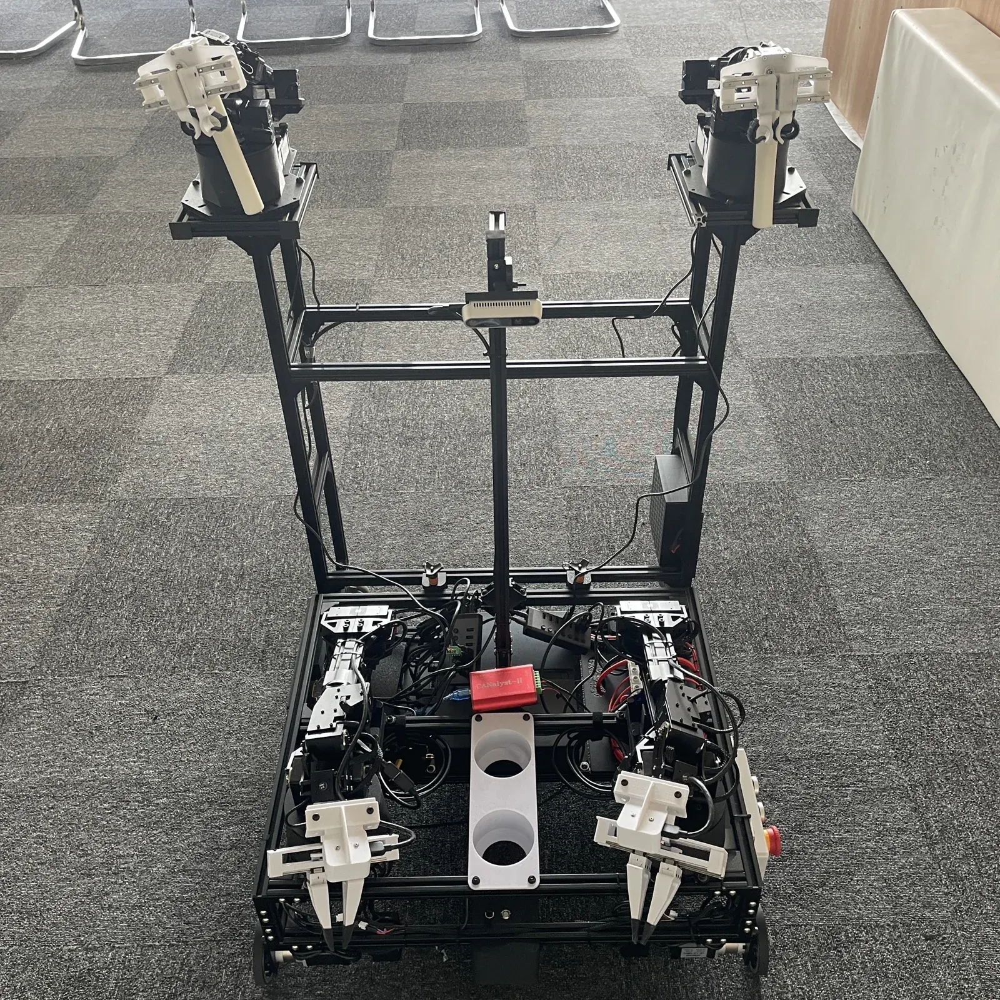

双臂示教学习Dual-arm imitation learning
ALOHA 双臂示教与羽毛球操作ALOHA dual-arm demonstration and shuttlecock manipulation
记录人工示教并训练双臂操作，探索单球、多球与嵌套羽毛球等不同抓取任务。Records human demonstrations and trains dual-arm manipulation for single, multiple, and nested shuttlecock tasks.
任务背景Task context
羽毛球存在球头与羽身方向、相互勾连与嵌套等复杂摆放。项目通过双臂协作与人工示教探索更灵活的物体拿取和分离动作。Shuttlecocks have directional geometry and can be entangled or nested. The project explores coordinated dual-arm actions and human demonstrations for more flexible pick-and-separate behaviors.
训练与执行Training & execution
平台包含主从双臂、移动底盘和 RGB-D 相机。PPT 记录了示教数据采集、训练修改以及 ACT 模型应用，并展示木块与羽毛球等不同任务。The platform comprises leader–follower arms, a mobile base, and RGB-D cameras. The slides document demonstration recording, training iterations, and use of an ACT model across block and shuttlecock tasks.
演示与限制Demonstration & limits
实机片段展示双臂拿取与拆解嵌套羽毛球。PPT 也明确指出多球抓取易失败，因此网页不把这些演示描述为稳定完成所有场景。Real robot footage shows grasping and separating nested shuttlecocks. The slides explicitly note frequent failures in multi-shuttlecock grasping, so the demos are presented as experiments rather than universal success.
